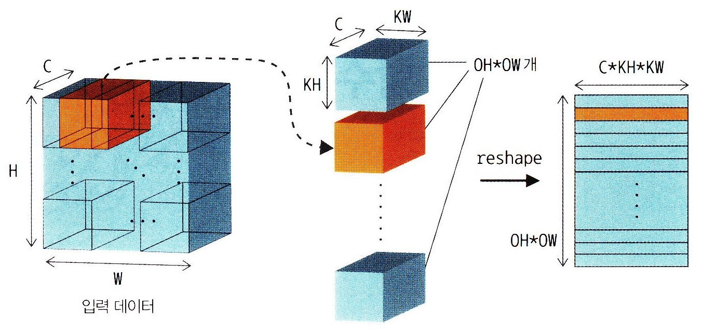
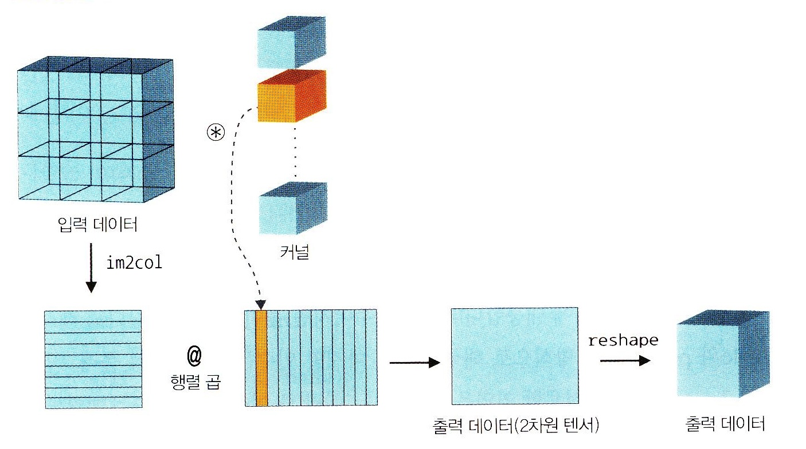
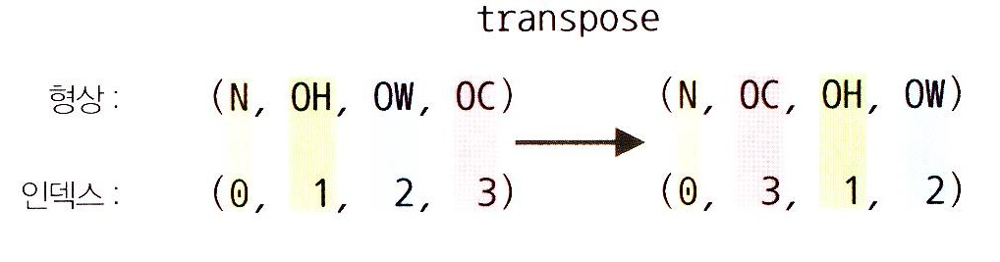
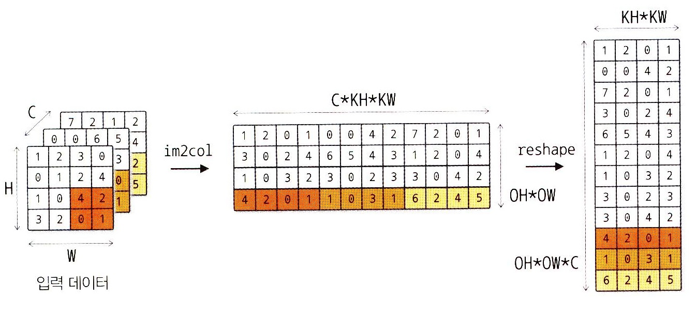
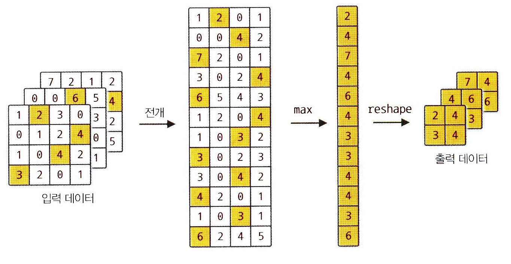

57단계 conv2d 함수와 pooling 함수
55~56단계에서 합성곱층과 풀링층에 대해 설명했습니다. 합성곱 연산을 곧이곧대로 구현하면 for 문이 겹겹이 중첩된 코드가 될 것입니다. 이렇게 코딩하기는 귀찮을 뿐 아니라 넘파이에서 for 문을 사용하면 속도가 느려진다는 단점도 있습니다. 그래서 for 문은 사용하지 않고 im2col이라는 편의 함수를 사용하여 간단히 구현하고자 합니다. 참고로 im2col은 ‘image to column’의 약자로, ‘이미지에서 열로’ 변환한다는 의미를 담고 있습니다.
NOTE DeZero에서는 신경망 변환 처리를 ‘함수’로 구현합니다. 그리고 매개변수를 갖는 계층은
Layer클래스를 상속받아 매개변수 관리를 맡겼습니다. 이번 단계에서는 합성곱층에서의 처리를conv2d(또는conv2d_simple) 함수로 구현하며,Layer클래스를 상속한Conv2d계층도 구현합니다. 그리고 풀링층에는 매개변수가 없기 때문에 (클래스는 빼고)pooling함수만 구현합니다.
57.1 im2col에 의한 전개
im2col은 입력 데이터를 한 줄로 ‘전개’하는 함수로, 합성곱 연산 중 커널 계산에 편리하도록 입력 데이터를 펼쳐줍니다. [그림 57-1]과 같이 3차원 텐서인 입력 데이터로부터 커널을 적용할 영역을 추출하는 것이죠(정확하게는 배치 수를 포함한 4차원 텐서로부터 커널을 적용할 영역을 꺼냅니다).
그림 57-1 커널 적용 영역의 전개

(입력 데이터 $(C, H, W)$ 로부터 필터를 적용할 영역을 추출하여 $OH \times OW$ 개의 $(C, KH, KW)$ 블록들을 만들고, 이를 행렬 곱을 위해 2차원 행렬 $(OH \times OW, C \times KH \times KW)$ 로reshape 하는 변환 흐름)
[그림 57-1]과 같이 커널을 적용할 영역을 꺼낸 다음, 한 줄로 형상을 바꿔reshape 최종적으로는 ‘행렬(2차원 텐서)’로 변환합니다. 이것이 im2col 함수가 수행하는 작업입니다.
CAUTION 체이너(Chainer)의
im2col은 [그림 57-1]의 1단계까지의 작업만 수행합니다(reshape 부분이 제외됩니다). 왜냐하면 영역을 꺼낸 후 텐서 곱*을 하여 원하는 계산을 수행할 수 있기 때문입니다. 이 교제에서는 (텐서 곱이 아닌) 행렬 곱을 사용하기 때문에 reshape까지 해줘야 합니다. 한편 DeZero의im2col함수는 인수로to_matrix플래그를 받는데, 이 값이True일 때만 [그림 57-1]의 reshape 부분까지 처리해줍니다.
im2col로 입력 데이터를 전개한 후에는 합성곱층의 커널(필터)을 한 줄로 전개합니다. 그런 다음 [그림 57-2]처럼 두 행렬을 곱합니다.
[그림 57-2]와 같이 행렬 곱을 계산하면 행렬(2차원 텐서)이 출력됩니다. 마지막으로 이 출력을 3차원 텐서(정확하게는 배치 수를 포함한 4차원 텐서)로 변환합니다. 이상이 합성곱층의 구현 흐름입니다.
NOTE 합성곱 연산 시
im2col로 전개하면 대부분의 경우 원소 수가 원래보다 많아지기 때문에 메모리를 많이 소비합니다. 하지만 행렬 곱으로 계산할 수 있기 때문에 행렬 라이브러리가 제공하는 최적화된 함수의 혜택을 누릴 수 있습니다.
* 텐서 곱은 단순히 행렬 곱의 확장으로, 축을 지정하여 두 텐서를 곱셈한 후 누적하는 계산입니다. 참고로 이를 곱셈-누적 연산(multiply-accumulate operation)이라고 합니다. 넘파이에서는 np.tensordot과 np.einsum을 사용하여 텐서 곱을 계산할 수 있습니다.
그림 57-2 입력 데이터와 커널의 행렬 곱 계산

(입력 데이터는im2col을 통해 2차원 행렬로 변환되고, 커널도 2차원 행렬로 전개되어 행렬 곱(@)을 계산한 후, 출력 2차원 텐서를 다시 원래의 3차원 데이터 형상으로 reshape 하는 전체 합성곱 구현 과정)
57.2 conv2d 함수 구현
이 교제에서는 DeZero의 im2col 함수를 블랙박스처럼 사용한다고 가정합니다(즉, 상세 구현은 신경 쓰지 않습니다). 어쨌든 im2col도 DeZero 함수이므로 입력으로 Variable 인스턴스를 받으며 backward를 호출하여 미분도 계산할 수 있습니다.
CAUTION CNN에서 이용하는 함수들은 코드 양이 많으므로
dezero/functions.py가 아닌dezero/functions_conv.py에 모아뒀습니다. DeZero의im2col함수 역시dezero/functions_conv.py에 있습니다. 하지만dezero/functions_conv.py에서 구현한 DeZero 함수들을dezero/functions.py에서 임포트하고 있으므로 사용자는dezero/functions.py만 임포트하면 모든 함수를 사용할 수 있습니다.
그럼 DeZero의 im2col 함수에 대해 살펴보겠습니다. 이 함수의 인터페이스는 다음과 같으며, 인수에 대한 설명을 [표 57-1]로 정리했습니다.
im2col(x, kernel_size, stride=1, pad=0, to_matrix=True)
표 57-1 im2col 함수의 인수
| 인수 | 데이터 타입 | 설명 |
|---|---|---|
x |
Variable 또는 ndarray |
입력 데이터 |
kernel_size |
int 또는 (int, int) |
커널 크기 |
stride |
int 또는 (int, int) |
스트라이드 |
pad |
int 또는 (int, int) |
패딩 |
to_matrix |
bool |
행렬로 형상 변환 여부 |
인수 kernel_size는 int 또는 (int, int) 튜플로 제공합니다. 만약 튜플로 주어지면 첫 번째 원소가 높이에, 두 번째 원소가 너비에 대응합니다. int로 주어지면 높이와 너비가 같다고 해석합니다. 인수 stride와 pad도 같은 방식으로 해석합니다. 마지막 인수는 to_matrix 플래그입니다. 이 플래그가 True면 커널을 적용할 영역을 추출한 후 ‘행렬’로 형상 변환합니다(행렬로 바꾸는 이유는 행렬 곱으로 계산하기 위해서입니다).
그럼 im2col 함수를 실제로 사용해보겠습니다.
steps/step57.py
import numpy as np
import dezero.functions as F
x1 = np.random.rand(1, 3, 7, 7) # 배치 크기 = 1
col1 = F.im2col(x1, kernel_size=5, stride=1, pad=0, to_matrix=True)
print(col1.shape)
x2 = np.random.rand(10, 3, 7, 7) # 배치 크기 = 10
kernel_size = (5, 5)
stride = (1, 1)
pad = (0, 0)
col2 = F.im2col(x2, kernel_size, stride, pad, to_matrix=True)
print(col2.shape)
실행 결과
(9, 75)
(90, 75)
두 가지 예를 보여드렸습니다. 첫 번째로 준비한 데이터의 형상은 (1, 3, 7, 7)입니다. 배치 크기가 1, 채널 수가 3, 높이가 7, 너비가 7인 데이터입니다. 두 번째는 첫 번째 예에서 배치 크
기를 10으로 늘린 경우입니다. 각각에 im2col 함수를 적용하면 두 경우 모두에서 두 번째 차원의 원소 수는 75입니다. 커널의 원소 수와 일치하는 결과죠(채널 수 3에 $(5, 5)$ 형상의 데이터). 그리고 첫 번째 예의 결과는 $(9, 75)$ 인 반면, 두 번째 예는 배치 크기가 10이므로 그 10배인 $(90, 75)$ 가 되었습니다.
다음은 im2col 함수를 사용하여 합성곱 연산을 수행하는 ‘DeZero 함수’를 구현할 차례입니다. 그런데 그 전에 pair(x)라는 편의 함수부터 구현하겠습니다.
dezero/utils.py
def pair(x):
if isinstance(x, int):
return (x, x)
elif isinstance(x, tuple):
assert len(x) == 2
return x
else:
raise ValueError
pair(x) 함수는 인수 x가 int라면 (x, x) 형태의 튜플로 변환해 반환하고, x가 원소 2개짜리 튜플이면 그대로 돌려줍니다. 이 함수를 사용하면 다음과 같이 인수 타입이 int든 (int, int)든 상관없이 원소 2개짜리 튜플을 얻을 수 있습니다.
from dezero.utils import pair
print(pair(1))
print(pair((1, 2)))
실행 결과
(1, 1)
(1, 2)
드디어 진짜로 합성곱 연산을 수행하는 함수 conv2d_simple을 구현할 시간입니다. 다음 코드는 dezero/functions.py가 아닌 dezero/functions_conv.py에 위치합니다.
dezero/functions_conv.py
from dezero.utils import pair, get_conv_outsize
def conv2d_simple(x, W, b=None, stride=1, pad=0):
x, W = as_variable(x), as_variable(W)
Weight = W # Width의 'W'와 헷갈리지 않기 위해
N, C, H, W = x.shape
OC, C, KH, KW = Weight.shape
SH, SW = pair(stride)
PH, PW = pair(pad)
OH = get_conv_outsize(H, KH, SH, PH)
OW = get_conv_outsize(W, KW, SW, PW)
col = im2col(x, (KH, KW), stride, pad, to_matrix=True) # ❶
Weight = Weight.reshape(OC, -1).transpose() # ❷
t = linear(col, Weight, b) # ❸
y = t.reshape(N, OH, OW, OC).transpose(0, 3, 1, 2) # ❹
return y
이 코드에서 중요한 부분은 음영을 칠해뒀습니다. 우선 ❶에서 입력 데이터를 im2col로 전개합니다. ❷에서는 커널 Weight를 [그림 57-2]에서와 같이 한 줄로 펼쳐 재정렬합니다. 여기에서 Weight.reshape(OC, -1)처럼 마지막 인수로 -1을 주었는데, 이는 reshape 함수의 편의 기능입니다. 마지막 인수를 -1로 지정하면 그 앞의 인수들로 정의한 다차원 배열에 전체 원소들을 적절히 분배해줍니다. 예를 들어 (10, 3, 5, 5) 형상의 배열이라면 원소가 총 750개인데, 이 배열에 reshape(10, -1)을 수행하면 (10, 75) 형상의 배열로 바뀝니다(총 750개를 10개의 묶음으로 배분한 결과입니다).
그리고 ❸에서 행렬 곱을 계산합니다. 이때 선형 변환인 linear 함수를 사용하여 편향까지 포함한 계산을 수행합니다. 마지막으로 ❹에서 출력 크기를 적절한 형상으로 바꾼 후 DeZero의 transpose 함수를 사용했습니다. 38단계에서 설명한대로 transpose 함수는 텐서의 축 순서를 바꿔주는데, 여기에서는 [그림 57-3]처럼 교체한 것입니다.
그림 57-3 transpose 함수에 의한 축의 순서 교체

\[\text{transpose}\] \[\begin{aligned} \text{형상: } & (N, OH, OW, OC) & \longrightarrow & \quad (N, OC, OH, OW) \\ \text{인덱스: } & (0, \ \ 1, \ \ 2, \ \ 3) & \longrightarrow & \quad (0, \ \ 3, \ \ 1, \ \ 2) \end{aligned}\]이상이 conv2d_simple 함수입니다. 이번 합성곱 연산도 지금까지 구현해둔 DeZero 함수를 사용하여 구현했기 때문에 역전파도 문제없이 동작합니다. 그래서 conv2d_simple 함수를 다음처럼 사용할 수도 있습니다.
steps/step57.py
N, C, H, W = 1, 5, 15, 15
OC, (KH, KW) = 8, (3, 3)
x = Variable(np.random.randn(N, C, H, W))
W = np.random.randn(OC, C, KH, KW)
y = F.conv2d_simple(x, W, b=None, stride=1, pad=1)
y.backward()
print(y.shape)
print(x.grad.shape)
실행 결과
(1, 8, 15, 15)
(1, 5, 15, 15)
이와 같이 합성곱 연산을 수행할 수 있게 되었습니다. 참고로 지면으로는 간단한 구현 방식만을 설명했습니다(그래서 함수 이름도 conv2d_simple입니다). 더 나은 방식은 물론 Function 클래스를 상속하여 Conv2d 클래스로 구현하는 것이죠. dezero/functions_conv.py에 Conv2d 클래스와 conv2d 함수를 준비해뒀으니 관심 있는 분은 참고하세요.
NOTE
Conv2d클래스에서는 순전파 시im2col메서드를 이용하는데, (행렬 곱이 아닌) 텐서 곱 방식으로 계산합니다. 또한im2col로 전개한 2차원 텐서(변수 이름은col입니다)는 사용 후 메모리에서 즉시 삭제합니다(col은 매우 크기 때문에 메모리를 많이 소비합니다). 그리고 역전파는 ‘전치 합성곱transposed convolution’** 방식으로 계산합니다.
** 디컨볼루션(Deconvolution)이라고도 하며, 합성곱(컨볼루션)의 역방향 변환을 해줍니다.
57.3 Conv2d 계층 구현
이어서 (함수가 아닌) ‘계층’으로서의 Conv2d 클래스를 구현해보죠.
dezero/layers.py
class Conv2d(Layer):
def __init__(self, out_channels, kernel_size, stride=1,
pad=0, nobias=False, dtype=np.float32, in_channels=None):
super().__init__()
self.in_channels = in_channels
self.out_channels = out_channels
self.kernel_size = kernel_size
self.stride = stride
self.pad = pad
self.dtype = dtype
self.W = Parameter(None, name='W')
if in_channels is not None:
self._init_W()
if nobias:
self.b = None
else:
self.b = Parameter(np.zeros(out_channels, dtype=dtype), name='b')
def _init_W(self, xp=np):
C, OC = self.in_channels, self.out_channels
KH, KW = pair(self.kernel_size)
scale = np.sqrt(1 / (C * KH * KW))
W_data = xp.random.randn(OC, C, KH, KW).astype(self.dtype) * scale
self.W.data = W_data
def forward(self, x):
if self.W.data is None:
self.in_channels = x.shape[1]
xp = cuda.get_array_module(x)
self._init_W(xp)
y = F.conv2d_simple(x, self.W, self.b, self.stride, self.pad)
# 또는 y = F.conv2d(x, self.W, self.b, self.stride, self.pad)
return y
보다시피 Layer 클래스를 상속하고, 초기화 시 [표 57-2]의 인수들을 받습니다.
표 57-2 Conv2d 클래스의 초기화 인수
| 인수 | 데이터 타입 | 설명 |
|---|---|---|
out_channels |
int |
출력 데이터의 채널 수 |
kernel_size |
int 또는 (int, int) |
커널 크기 |
stride |
int 또는 (int, int) |
스트라이드 |
pad |
int 또는 (int, int) |
패딩 |
nobias |
bool |
편향 사용 여부 |
dtype |
numpy.dtype |
초기화할 가중치의 데이터 타입 |
in_channels |
int 또는 None |
입력 데이터의 채널 수 |
[표 57-2]에서 주의할 점은 in_channels의 기본값이 None이라는 것입니다. 이 값이 None이면 forward(x)에 주어지는 x의 형상으로부터 in_channels의 값을 얻고, 그 시점(순전파)에 가중치 데이터를 초기화합니다. 완전연결계층의 Linear 계층과 동일한 작동 방식입니다.
주요 처리는 앞서 구현한 conv2d_simple(혹은 conv2d)을 이용합니다. 이상으로 Conv2d 계층의 구현을 살펴봤습니다.
57.4 pooling 함수 구현
마지막으로 pooling 함수를 구현하겠습니다. 이 함수도 conv2d_simple과 마찬가지로 im2col을 사용하여 입력 데이터를 전개합니다. 그러나 풀링은 채널 방향과는 독립적이라는 점이 합성곱층과 다릅니다. 다시 말해 [그림 57-4]와 같이 풀링의 적용 영역은 채널마다 독립적으로 전개합니다.
그림 57-4 입력 데이터에 대해 풀링 적용 영역을 전개(2x2 풀링의 예)

(입력 데이터 $(C, H, W)$ 에im2col을 적용해 $(OH \times OW, C \times KH \times KW)$ 행렬을 만든 후, 이를 채널별로 독립적으로 세로 전개하여 $(OH \times OW \times C, KH \times KW)$ 형상의 행렬로 reshape 하는 과정)
- 입력 데이터: 형상 $(C, H, W)$
im2col결과 행렬: 형상 $(OH \times OW, C \times KH \times KW) = (4, 12)$[ 1 2 0 1 | 0 0 4 2 | 7 2 0 1 ] [ 3 0 2 4 | 6 5 4 3 | 1 2 0 4 ] [ 1 0 3 2 | 3 0 2 3 | 3 0 4 2 ] [ 4 2 0 1 | 1 0 3 1 | 6 2 4 5 ]reshape결과 행렬: 형상 $(OH \times OW \times C, KH \times KW) = (12, 4)$[ 1 2 0 1 ] <-- Channel 0, 영역 0 [ 0 0 4 2 ] <-- Channel 1, 영역 0 [ 7 2 0 1 ] <-- Channel 2, 영역 0 [ 3 0 2 4 ] <-- Channel 0, 영역 1 [ 6 5 4 3 ] <-- Channel 1, 영역 1 [ 1 2 0 4 ] <-- Channel 2, 영역 1 [ 1 0 3 2 ] ... [ 3 0 2 3 ] [ 3 0 4 2 ] [ 4 2 0 1 ] [ 1 0 3 1 ] [ 6 2 4 5 ]
이렇게 전개한 후 전개된 행렬의 각 행별로 최댓값을 구해 적절한 형상으로 바꾸면 끝입니다. 그림으로 표현하면 [그림 57-5]와 같습니다.
그림 57-5 pooling 함수의 구현 흐름(색칠된 원소 = 풀링 적용 영역에서 값이 가장 큰 원소)

(입력 데이터 전개 후, $(12, 4)$ 행렬의 각 행별 최댓값(Max)을 추출하여 $(12, 1)$ 열벡터를 구하고, 이를 출력 데이터 형상으로reshape 하는 흐름)
- 전개 행렬: 각 행의 최댓값을 구함 (각 행의 최댓값은 대괄호
[ ]로 표시)[ 1 [2] 0 1 ] --> 2 [ 0 0 [4] 2 ] --> 4 [[7] 2 0 1 ] --> 7 [ 3 0 2 [4]] --> 4 [[6] 5 4 3 ] --> 6 [ 1 2 0 [4]] --> 4 [ 1 0 [3] 2 ] --> 3 [[3] 0 2 3 ] --> 3 [ 3 0 [4] 2 ] --> 4 [[4] 2 0 1 ] --> 4 [ 1 0 [3] 1 ] --> 3 [[6] 2 4 5 ] --> 6 max추출 결과:[2, 4, 7, 4, 6, 4, 3, 3, 4, 4, 3, 6]^Treshape결과: 출력 데이터 형상으로 변환
이상이 pooling 함수의 구현 흐름입니다. 다음은 코드를 볼 차례입니다.
dezero/functions_conv.py
def pooling_simple(x, kernel_size, stride=1, pad=0):
x = as_variable(x)
N, C, H, W = x.shape
KH, KW = pair(kernel_size)
PH, PW = pair(pad)
SH, SW = pair(stride)
OH = get_conv_outsize(H, KH, SH, PH)
OW = get_conv_outsize(W, KW, SW, PW)
col = im2col(x, kernel_size, stride, pad, to_matrix=True) # ❶ 전개
col = col.reshape(-1, KH * KW)
y = col.max(axis=1) # ❷ 최댓값
y = y.reshape(N, OH, OW, C).transpose(0, 3, 1, 2) # ❸ 형상 변환
return y
pooling 함수(정확히는 pooling_simple 함수) 구현은 세 단계로 진행됩니다. ❶에서 입력 데이터를 전개하고, ❷에서 각 행의 최댓값을 찾고, ❸에서 적절한 크기로 출력의 형상을 변환합니다.
NOTE 최댓값 계산에는 DeZero의
max함수를 이용합니다.max함수는 인수로 넘파이의np.max와 같은 값을 지정할 수 있습니다. 앞의 코드에서는 인수axis를 지정하여 어떤 축을 기준으로 최댓값을 구할지 명시했습니다.
이상이 pooling 함수의 구현입니다. 지금까지 본 것처럼, 먼저 입력 데이터를 풀링하기 쉬운 형태로 전개해주면 그 후의 구현은 매우 간단합니다.